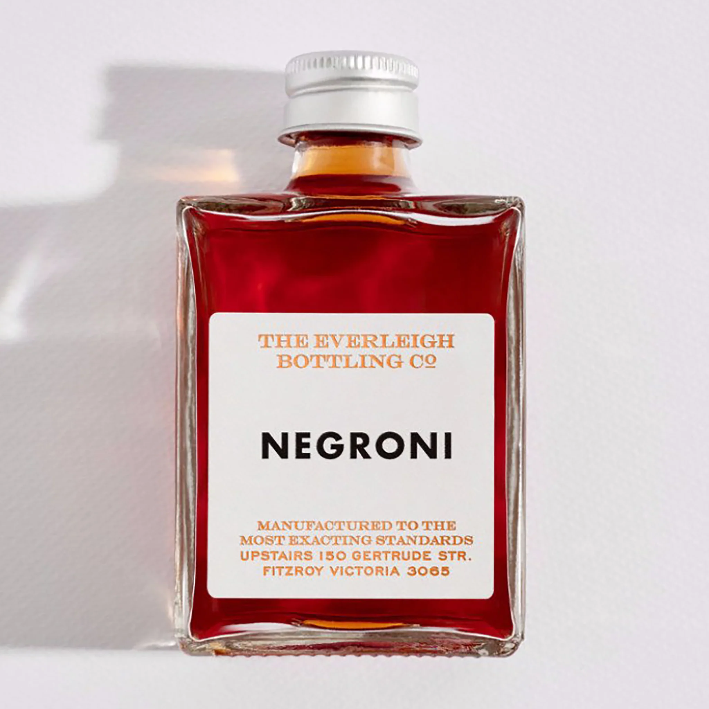

The Negroni, a classic cocktail with a rich history, is revered for its perfect balance of bitterness, sweetness, and herbal aromatics. Comprising equal parts gin, vermouth rosso, and Campari, served over ice and garnished with an orange peel, it offers a complex flavor profile that is both sophisticated and refreshing. Originating in Italy in the early 20th century, it has gained worldwide popularity among cocktail enthusiasts. Its bold flavor and simplicity in preparation make it a staple in the repertoire of professional bartenders and home mixologists alike. Beyond its taste, the Negroni stands as a symbol of Italian cocktail culture, embodying elegance and conviviality.
